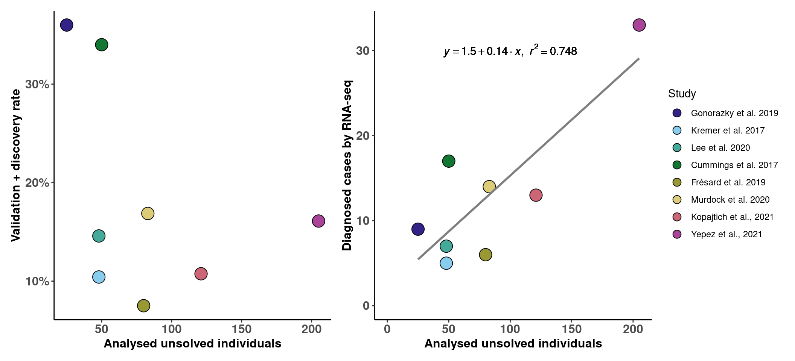
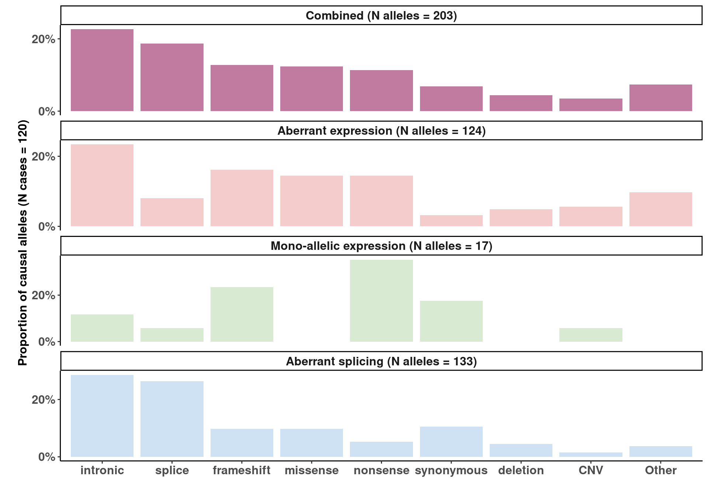

Eight studies with a minimum of 20 cases investigated a total of 660 cases by RNA-seq and provided a molecular diagnosis to 104 WES/WGS inconclusive cases (16%), additionally confirming known pathogenic variants in diagnosed cases
p00
Proportions of pathogenic alleles causing aberrant RNA phenotypes.
p3c